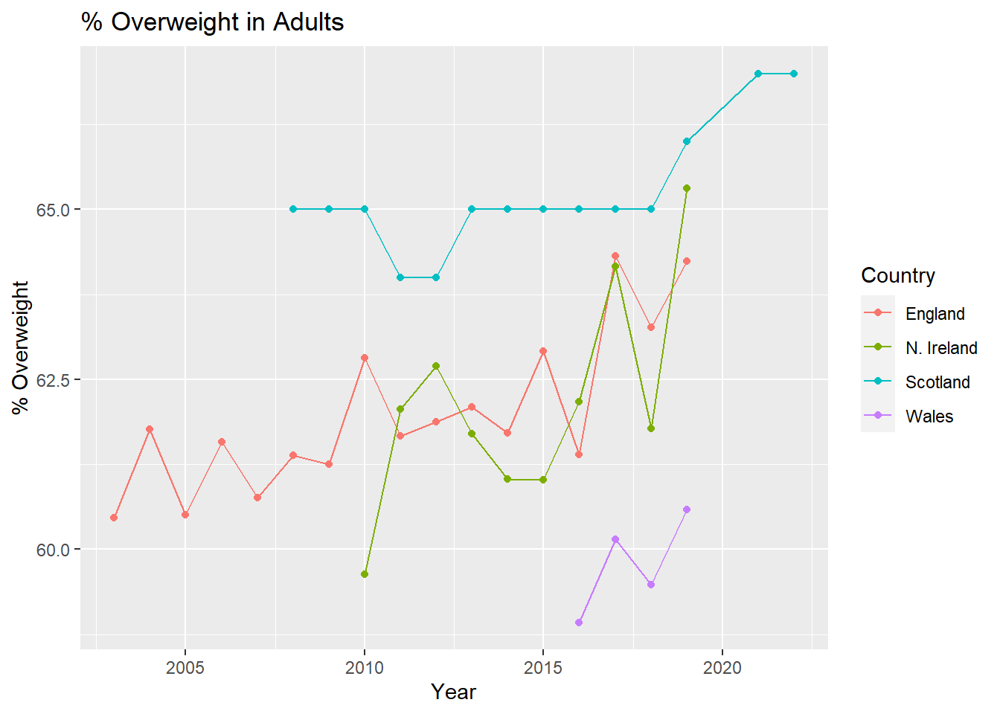
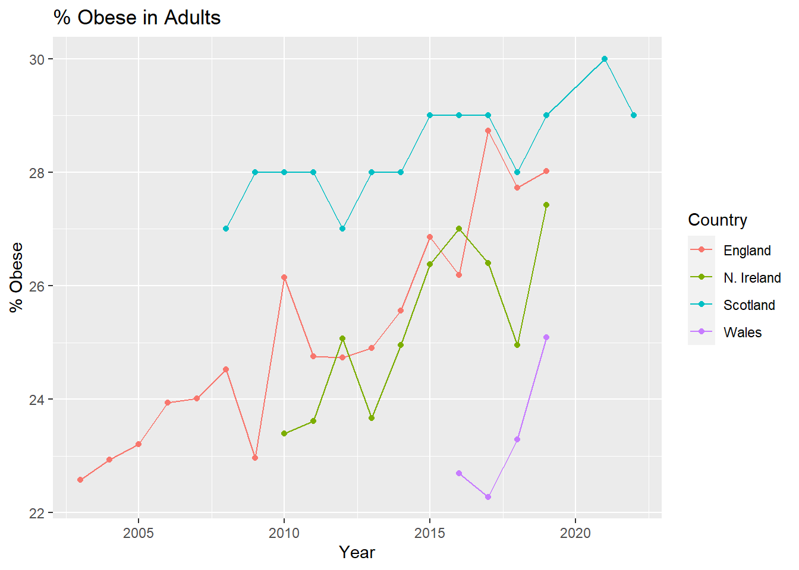
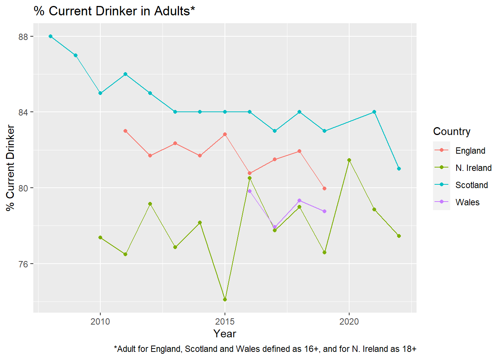
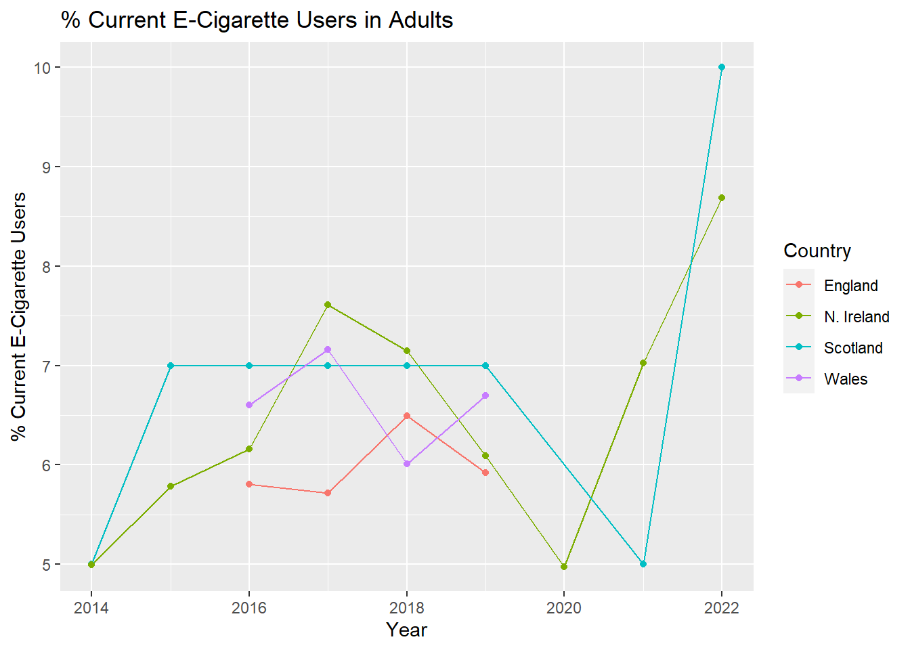

knitr::opts_knit$set(root.dir = "C:/Users/rfrost/OneDrive - The Institute of Cancer Research/Documents/Position Paper/Data")Position Paper
Setup
Packages
library(dplyr)
Attaching package: 'dplyr'The following objects are masked from 'package:stats':
filter, lagThe following objects are masked from 'package:base':
intersect, setdiff, setequal, unionlibrary(readxl)
library(tidyr)
library(purrr)
library(ggplot2)
library(scales)
Attaching package: 'scales'The following object is masked from 'package:purrr':
discardFunction - Main
data_hub <- function(country, rf){
# country <- "Wales"
#
# rf <- "E_Cigarette"
data <- list()
sheets <- excel_sheets(paste0(rf, "_Data.xlsx"))
spec_sheets <- sheets[grepl(sheets, pattern = country)]
if(country == "England"){
for(sheet in spec_sheets){
nocol <- ncol(read_excel(paste0(rf, "_Data.xlsx"), sheet = sheet))
tempdata <- read_excel(paste0(rf, "_Data.xlsx"), sheet = sheet, col_types = c("text", rep("numeric", nocol-1)))
group <- gsub(x = sheet, pattern = "England_", replacement = "")
data[[paste0(rf, "-", country, "-", sheet)]] <- pull_HSE_data(data = tempdata, group = group)
data[[paste0(rf, "-", country, "-", sheet)]]$section <- rf
}
} else if(country == "Scotland"){
for(sheet in spec_sheets){
tempdata <- read_excel(paste0(rf, "_Data.xlsx"), sheet = sheet)
group <- gsub(x = sheet, pattern = "Scotland_", replacement = "")
data[[paste0(rf, "-", country, "-", sheet)]] <- pull_SHS_data(data = tempdata, group = group)
data[[paste0(rf, "-", country, "-", sheet)]]$section <- rf
}
} else if(country == "Wales"){
for(sheet in spec_sheets){
tempdata <- read_excel(paste0(rf, "_Data.xlsx"), sheet = sheet)
group <- gsub(x = sheet, pattern = "Wales_", replacement = "")
data[[paste0(rf, "-", country, "-", sheet)]] <- pull_NSW_data(data = tempdata, group = group)
data[[paste0(rf, "-", country, "-", sheet)]]$section <- rf
}
} else if(country == "NIreland" & rf != "Activity"){
for(sheet in spec_sheets){
tempdata <- read_excel(paste0(rf, "_Data.xlsx"), sheet = sheet)
group <- gsub(x = sheet, pattern = "NIreland_", replacement = "")
data[[paste0(rf, "-", country, "-", sheet)]] <- pull_HSNI_data(data = tempdata, group = group)
data[[paste0(rf, "-", country, "-", sheet)]]$variable <- get_variable_HSNI(rf)
data[[paste0(rf, "-", country, "-", sheet)]]$section <- rf
}
} else if(country == "NIreland" & rf == "Activity"){
tempdata <- read_excel(paste0(rf, "_Data.xlsx"), sheet = "NIreland_Men")
group <- "Men"
data[["Activity-NIreland-Men"]] <- pull_HSNI_data_alt(data = tempdata, group = "Men")
# data[["Activity-NIreland-Men"]]$variable <- get_variable_HSNI(rf)
data[["Activity-NIreland-Men"]]$section <- rf
tempdata <- read_excel(paste0(rf, "_Data.xlsx"), sheet = "NIreland_Women")
group <- "Women"
data[["Activity-NIreland-Women"]] <- pull_HSNI_data_alt(data = tempdata, group = "Women")
# data[["Activity-NIreland-Women"]]$variable <- get_variable_HSNI(rf)
data[["Activity-NIreland-Women"]]$section <- rf
tempdata <- read_excel(paste0(rf, "_Data.xlsx"), sheet = "NIreland_All")
group <- "All"
data[["Activity-NIreland-All"]] <- pull_HSNI_data(data = tempdata, group = "All")
data[["Activity-NIreland-All"]]$variable <- get_variable_HSNI(rf)
data[["Activity-NIreland-All"]]$section <- rf
} else {
return(cat("ERROR"))
}
return(data)
}Function - England Health Survey
pull_HSE_data <- function(data, group){
# Edit for activity data format
if(is.na(data[2,2])){
data <- data[-1,]
}
# Remove weighted bases - can alter to keep
if("Weighted bases" %in% data$...1){
data <- data[1:(which(data$`...1`=="Weighted bases")-1),]
} else if("Bases (weighted)" %in% data$...1){
data <- data[1:(which(data$`...1`=="Bases (weighted)")-1),]
}
# Get cat columns
ranges <- data$...1[is.na(data[,2])]
rangesdif <- diff(which(is.na(data[,2])))
if(max(rangesdif) != min(rangesdif)){
return(cat("ERROR: Inconsistent Data Format"))
}
data <- data |>
mutate(age_group = rep(ranges, each = rangesdif[1])) |>
filter(!`...1` %in% ranges) |>
pivot_longer(cols = colnames(data)[2:ncol(data)]) |>
rename(year = name, variable = `...1`)
data[["country"]] <- "England"
data[["group"]] <- group
## Smoking data for some reason is ordered oppositely, so made quick fix here.
## Not ideal fix but will do for temporary purposes.
if("Current cigarette smoker" %in% data[["age_group"]] | "Currently uses e-cigarettes" %in% data[["age_group"]] ){
data <- data |>
rename(temp_age = variable, temp_var = age_group) |>
rename(age_group = temp_age, variable = temp_var)
}
return(data)
}Function - Alt England Health Survey (Diabetes Data)
pull_HSE_diabetes_data <- function(data, group){
if("Weighted bases" %in% data$...1){
data <- data[1:(which(data$`...1`=="Weighted bases")-1),]
}
colnames(data) <- c("age_group", colnames(data)[2:ncol(data)])
data <- data[-c(1,2),]
data <- data |>
pivot_longer(cols = colnames(data)[2:ncol(data)]) |>
rename(year = name)
data[["country"]] <- "England"
data[["group"]] <- group
data[["variable"]] <- "% Diabetes"
return(data)
}Function - Scottish Health Survey
pull_SHS_data <- function(data, group){
if(group == "Sex"){
data <- data |>
select(year = Year, country = Geographylevel, variable = Categories,
group = Sex, value = Percent) |>
mutate(age_group = "16+")
} else if(group == "Age"){
data <- data |>
select(year = Year, country = Geographylevel,
variable = Categories, value = Percent, age_group = Age) |>
mutate(group = "All adults")
}
return(data)
}Function - National Survey for Wales
pull_NSW_data <- function(data, group){
year_input <- group
# data <- read_excel("E_Cigarette_Data.xlsx", sheet = "Wales_2017_2018")
data <- as.data.frame(t(as.matrix(data, dimnames = NULL)))
rownames(data) <- NULL
data[data=="."] <- NA
data <- data |>
mutate(V2 = case_when(
is.na(V2) ~ V1,
TRUE ~ V2
), V3 = case_when(
is.na(V3) ~ V2,
TRUE ~ V3
)) |>
select(-V1, -V2)
colnames(data) <- c("age_group", data[2,2:ncol(data)])
data <- data[-c(1,2),]
data <- data |>
mutate(group = rep(c("All", "Men", "Women"), each = 11),
year = year_input,
country = "Wales") |>
pivot_longer(cols = colnames(data)[2:ncol(data)]) |>
rename(variable = name)
return(data)
}Function - Health Survey Northern Ireland
pull_HSNI_data <- function(data, group){
# data <- read_excel("Activity_Data.xlsx", sheet = "NIreland_Men")
# group <- "Males"
colnames(data)[1] <- "age_group"
data <- data |>
pivot_longer(cols = colnames(data)[2:ncol(data)]) |>
rename(year = name) |>
mutate(country = "N. Ireland",
group = {{group}})
return(data)
}
pull_HSNI_data_alt <- function(data, group){
# data <- read_excel("Activity_Data.xlsx", sheet = "NIreland_Men")
# group <- "Males"
colnames(data)[1] <- "variable"
data <- data |>
pivot_longer(cols = colnames(data)[2:ncol(data)]) |>
rename(year = name) |>
mutate(country = "N. Ireland",
group = {{group}},
age_group = "19+") # Table specifies 19+ participants.
return(data)
}
get_variable_HSNI <- function(rf){
section <- rf
variable <- case_when(
section == "BMI" ~ "Overweight",
section == "Alcohol" ~ "Drink",
section == "Smoking" ~ "Smoke",
section == "E_Cigarette" ~ "E-Cigarette Use",
section == "Activity" ~ "Meet Recommendations",
TRUE ~ "ERROR"
)
}Grabbing First Round of Data
risk_factors <- c("BMI", "Alcohol", "E_Cigarette", "Smoking", "Activity")
countries <- c("England", "Scotland", "Wales", "NIreland")
data <- data.frame(section = character(0), variable = character(0), country = character(0), year = numeric(0),
group = character(0), age_group = character(0), value = numeric(0))
for(rf in risk_factors){
for(country in countries){
new_data <- bind_rows(data_hub(country, rf))
data <- rbind(data, new_data)
}
}New names:
`` -> `...1`Warning: Expecting numeric in C31 / R31C3: got '-'Warning: Expecting numeric in K31 / R31C11: got '-'Warning: Expecting numeric in C40 / R40C3: got '-'Warning: Expecting numeric in D40 / R40C4: got '-'Warning: Expecting numeric in J40 / R40C10: got '-'Warning: Expecting numeric in Q40 / R40C17: got '-'Warning: Expecting numeric in F49 / R49C6: got '-'Warning: Expecting numeric in H49 / R49C8: got '-'Warning: Expecting numeric in I58 / R58C9: got '-'Warning: Expecting numeric in L58 / R58C12: got '-'Warning: Expecting numeric in C62 / R62C3: got '-'Warning: Expecting numeric in F62 / R62C6: got '-'Warning: Expecting numeric in H62 / R62C8: got '-'Warning: Expecting numeric in N62 / R62C14: got '-'New names:
New names:
New names:
New names:
New names:
New names:
New names:
New names:
New names:
New names:
New names:
New names:
New names:
New names:
New names:
New names:
New names:
New names:
`` -> `...1`Warning: Expecting numeric in E69 / R69C5: got '-'Warning: Expecting numeric in F69 / R69C6: got '-'New names:
New names:
New names:
New names:
New names:
New names:
New names:
New names:
New names:
New names:
New names:
New names:
New names:
New names:
New names:
New names:
New names:
New names:
New names:
New names:
New names:
New names:
New names:
New names:
New names:
New names:
New names:
New names:
New names:
New names:
New names:
New names:
New names:
New names:
New names:
New names:
New names:
`` -> `...1`Cleaning Data
data2 <- data |>
mutate(year = case_when(
grepl(year, pattern = "\\/") ~ map_chr(strsplit(year, "/"), 1),
grepl(year, pattern = "\\_") ~ map_chr(strsplit(year, "_"), 1),
TRUE ~ year
), year = as.numeric(year),
age_group = case_when(
age_group %in% c("All men", "All women", "All", "All adults", "Total") ~ "16+",
grepl(age_group, pattern = "Age ") ~ gsub(age_group, pattern = "Age ", replacement = ""),
grepl(age_group, pattern = " years") ~ gsub(age_group, pattern = " years", replacement = ""),
grepl(age_group, pattern = "All adults ") ~ gsub(age_group, pattern = "All adults ", replacement = ""),
grepl(age_group, pattern = "All aged ") ~ gsub(age_group, pattern = "All aged ", replacement = ""),
TRUE ~ age_group
), age_group = case_when(
country == "N. Ireland" & section == "Alcohol" ~ gsub(age_group, pattern = "16", replacement = "18"),
country == "N. Ireland" & section == "Activity" ~ gsub(age_group, pattern = "16", replacement = "19"),
TRUE ~ age_group
), variable = case_when(
country == "England" & section == "BMI" & variable == "% overweight" ~ "% overweight not obese",
country == "England" & section == "Alcohol" & variable == "% non drinker/did not drink in last 12 months" ~ "% Non-Drinker",
country == "England" & section == "Smoking" & variable == "Current cigarette smoker" ~ "% Current Smoker",
country == "England" & section == "E_Cigarette" & variable == "Currently uses e-cigarettes" ~ "% Current E-cigarette user",
country == "England" & section == "Activity" & variable %in% c("Meets aerobic guidelines", "Meets previous aerobic guidelines") ~ "% Meets guidelines", ## CHECK THIS IS APPROPRIATE
country == "Scotland" & section == "BMI" & variable == "Overweight (including obesity)" ~ "% Overweight",
country == "Scotland" & section == "Alcohol" & variable == "Non-drinker" ~ "% Non-Drinker",
country == "Scotland" & section == "Smoking" & variable == "Current smoker" ~ "% Current Smoker",
country == "Scotland" & section == "E_Cigarette" & variable == "Currently using" ~ "% Current E-cigarette user",
country == "Scotland" & section == "Activity" & variable == "Meets recommendations" ~ "% Meets guidelines",
country == "Wales" & section == "BMI" & variable == "BMI 25+ (overweight or obese)" ~ "% Overweight",
country == "Wales" & section == "Alcohol" & variable == "Average weekly alcohol consumption - none (may include some people who do sometimes drink)" ~ "% Non-Drinker",
country == "Wales" & section == "Smoking" & variable == "Smoker" ~ "% Current Smoker",
country == "Wales" & section == "E_Cigarette" & variable == "E-cigarette user" ~ "% Current E-cigarette user",
country == "Wales" & section == "Activity" & variable == "Active at least 150 minutes in previous week" ~ "% Meets guidelines",
country == "N. Ireland" & section == "BMI" & variable == "Overweight" ~ "% Overweight",
country == "N. Ireland" & section == "Alcohol" & variable == "Drink" ~ "% Non-Drinker",
country == "N. Ireland" & section == "Smoking" & variable == "Smoke" ~ "% Current Smoker",
country == "N. Ireland" & section == "E_Cigarette" & variable == "E-Cigarette Use" ~ "% Current E-cigarette user",
country == "N. Ireland" & section == "Activity" & variable == "Meet Recommendations" ~ "% Meets guidelines",
TRUE ~ variable
))
data3 <- data2 |>
mutate(value = as.numeric(value),
value = case_when(
country == "N. Ireland" & section == "Alcohol" & variable == "% Non-Drinker" ~ 1 - value,
TRUE ~ value
), value = case_when(
country == "N. Ireland" ~ 100 * value,
TRUE ~ value
))
## Need to group England overweight values together.
england_overweight <- data3 |>
filter(country == "England" & section == "BMI" & !grepl(group, pattern = "Children")) |>
pivot_wider(names_from = variable, values_from = value) |>
mutate(`% Overweight` = `% overweight including obese` + `% morbidly obese`) |>
pivot_longer(cols = c(unique(data3$variable[data3$country == "England" & data3$section == "BMI" & !grepl(data3$group, pattern = "Children")]), "% Overweight")) |>
rename(variable = name)
data4 <- data3 |>
filter(!(country == "England" & section == "BMI" & !grepl(group, pattern = "Children"))) |>
mutate(variable = case_when(
country == "England" & section == "BMI" & variable == "Overweight including obese" ~ "% Overweight",
TRUE ~ variable
)) |>
rbind(england_overweight)Plotting - Overweight
data4 |>
filter(variable == "% Overweight" & age_group == "16+" & grepl(group, pattern = "All")) |>
ggplot(aes(x = year, y = value, colour = country)) +
geom_line() +
geom_point() +
xlab("Year") +
ylab("% Overweight") +
ggtitle("% Overweight in Adults") +
labs(colour = "Country") +
scale_x_continuous(breaks = pretty_breaks())
Plotting - Alcohol
data4 |>
filter(variable == "% Non-Drinker" & age_group %in% c("16+", "18+") & grepl(group, pattern = "All")) |>
mutate(value = 100- value) |>
ggplot(aes(x = year, y = value, colour = country)) +
geom_line() +
geom_point() +
xlab("Year") +
ylab("% Current Drinker") +
ggtitle("% Current Drinker in Adults*") +
labs(colour = "Country", caption = "*Adult for England, Scotland and Wales defined as 16+, and for N. Ireland as 18+") +
scale_x_continuous(breaks = pretty_breaks())
Plotting - Smoking
data4 |>
filter(variable == "% Current Smoker" & age_group == "16+" & grepl(group, pattern = "All")) |>
ggplot(aes(x = year, y = value, colour = country)) +
geom_line() +
geom_point() +
xlab("Year") +
ylab("% Current Smoker") +
ggtitle("% Current Smoker in Adults") +
labs(colour = "Country") +
scale_x_continuous(breaks = pretty_breaks())
Plotting - E-Cigarette
data4 |>
filter(variable == "% Current E-cigarette user" & age_group == "16+" & grepl(group, pattern = "All")) |>
ggplot(aes(x = year, y = value, colour = country)) +
geom_line() +
geom_point() +
xlab("Year") +
ylab("% Current E-Cigarette Users") +
ggtitle("% Current E-Cigarette Users in Adults") +
labs(colour = "Country") +
scale_x_continuous(breaks = pretty_breaks())Plotting - Activity
data4 |>
filter(variable == "% Meets guidelines" & age_group %in% c("16+") & grepl(group, pattern = "All") |
variable == "% Meets guidelines" & age_group %in% c("19+") & grepl(group, pattern = "All") & country == "N. Ireland") |>
ggplot(aes(x = year, y = value, colour = country)) +
geom_line() +
geom_point() +
xlab("Year") +
ylab("% Meets Activity Guidelines") +
ggtitle("% Meets Activity Guidelines in Adults*") +
labs(colour = "Country", caption = "*Adult for England, Scotland and Wales defined as 16+, and for N. Ireland as 19+\nActivity guidelines are >150 mins Moderate Physical Activity") +
scale_x_continuous(breaks = pretty_breaks())
Age First Birth Data
afb_data <- read_excel("Age_First_Birth_Data.xlsx")[2:3,13:31]New names:
`` -> `...2`
`` -> `...3`
`` -> `...4`
`` -> `...5`
`` -> `...6`
`` -> `...7`
`` -> `...8`
`` -> `...9`
`` -> `...10`
`` -> `...11`
`` -> `...12`
`` -> `...13`
`` -> `...14`
`` -> `...15`
`` -> `...16`
`` -> `...17`
`` -> `...18`
`` -> `...19`
`` -> `...20`
`` -> `...21`
`` -> `...22`
`` -> `...23`
`` -> `...24`
`` -> `...25`
`` -> `...26`
`` -> `...27`
`` -> `...28`
`` -> `...29`
`` -> `...30`
`` -> `...31`
`` -> `...32`
`` -> `...33`
`` -> `...34`
`` -> `...35`
`` -> `...36`colnames(afb_data) <- afb_data[1,]
afb_data <- afb_data[2,]
afb_data |>
pivot_longer(cols = colnames(afb_data)) |>
mutate(Year = as.numeric(name), value = as.numeric(value)) |>
ggplot(aes(x = Year, y = value)) +
geom_line() +
geom_point() +
ylab("Average Age at First Birth") +
ggtitle("Average Age at First Birth in UK") +
scale_x_continuous(breaks = pretty_breaks())
Parity Data
Currently only have data for England and Wales. Trying to track down data for other countries.
read_excel("Parity_Data.xlsx") |>
mutate(age = case_when(
is.na(`Age exact years`) ~ 45,
TRUE ~ `Age exact years`),
year = age + `Year of birth of woman`,
final_value = ifelse(is.na(`Age exact years`), 1, 0),
`% Parous` = 100 - `0 (No children)`) |>
filter(final_value == 1) |>
ggplot(aes(x = year, y = `% Parous`)) +
geom_line() +
geom_point() +
xlab("Year") +
ylab("Parous (%)") +
ggtitle("Parity in England and Wales") +
scale_x_continuous(breaks = pretty_breaks()) Warning: Expecting numeric in B1861 / R1861C2: got 'Final'Warning: Expecting numeric in B1862 / R1862C2: got 'Final'Warning: Expecting numeric in B1863 / R1863C2: got 'Final'Warning: Expecting numeric in B1864 / R1864C2: got 'Final'Warning: Expecting numeric in B1865 / R1865C2: got 'Final'Warning: Expecting numeric in B1866 / R1866C2: got 'Final'Warning: Expecting numeric in B1867 / R1867C2: got 'Final'Warning: Expecting numeric in B1868 / R1868C2: got 'Final'Warning: Expecting numeric in B1869 / R1869C2: got 'Final'Warning: Expecting numeric in B1870 / R1870C2: got 'Final'Warning: Expecting numeric in B1871 / R1871C2: got 'Final'Warning: Expecting numeric in B1872 / R1872C2: got 'Final'Warning: Expecting numeric in B1873 / R1873C2: got 'Final'Warning: Expecting numeric in B1874 / R1874C2: got 'Final'Warning: Expecting numeric in B1875 / R1875C2: got 'Final'Warning: Expecting numeric in B1876 / R1876C2: got 'Final'Warning: Expecting numeric in B1877 / R1877C2: got 'Final'Warning: Expecting numeric in B1878 / R1878C2: got 'Final'Warning: Expecting numeric in B1879 / R1879C2: got 'Final'Warning: Expecting numeric in B1880 / R1880C2: got 'Final'Warning: Expecting numeric in B1881 / R1881C2: got 'Final'Warning: Expecting numeric in B1882 / R1882C2: got 'Final'Warning: Expecting numeric in B1883 / R1883C2: got 'Final'Warning: Expecting numeric in B1884 / R1884C2: got 'Final'Warning: Expecting numeric in B1885 / R1885C2: got 'Final'Warning: Expecting numeric in B1886 / R1886C2: got 'Final'Warning: Expecting numeric in B1887 / R1887C2: got 'Final'Warning: Expecting numeric in B1888 / R1888C2: got 'Final'Warning: Expecting numeric in B1889 / R1889C2: got 'Final'Warning: Expecting numeric in B1890 / R1890C2: got 'Final'Warning: Expecting numeric in B1891 / R1891C2: got 'Final'Warning: Expecting numeric in B1892 / R1892C2: got 'Final'Warning: Expecting numeric in B1893 / R1893C2: got 'Final'Warning: Expecting numeric in B1894 / R1894C2: got 'Final'Warning: Expecting numeric in B1895 / R1895C2: got 'Final'Warning: Expecting numeric in B1896 / R1896C2: got 'Final'Warning: Expecting numeric in B1897 / R1897C2: got 'Final'Warning: Expecting numeric in B1898 / R1898C2: got 'Final'Warning: Expecting numeric in B1899 / R1899C2: got 'Final'Warning: Expecting numeric in B1900 / R1900C2: got 'Final'Warning: Expecting numeric in B1901 / R1901C2: got 'Final'Warning: Expecting numeric in B1902 / R1902C2: got 'Final'Warning: Expecting numeric in B1903 / R1903C2: got 'Final'Warning: Expecting numeric in B1904 / R1904C2: got 'Final'Warning: Expecting numeric in B1905 / R1905C2: got 'Final'Warning: Expecting numeric in B1906 / R1906C2: got 'Final'Warning: Expecting numeric in B1907 / R1907C2: got 'Final'Warning: Expecting numeric in B1908 / R1908C2: got 'Final'Warning: Expecting numeric in B1909 / R1909C2: got 'Final'Warning: Expecting numeric in B1910 / R1910C2: got 'Final'Warning: Expecting numeric in B1911 / R1911C2: got 'Final'Warning: Expecting numeric in B1912 / R1912C2: got 'Final'Warning: Expecting numeric in B1913 / R1913C2: got 'Final'Warning: Expecting numeric in B1914 / R1914C2: got 'Final'Warning: Expecting numeric in B1915 / R1915C2: got 'Final'Warning: Expecting numeric in B1916 / R1916C2: got 'Final'Warning: Expecting numeric in B1917 / R1917C2: got 'Final'Warning: Expecting numeric in B1918 / R1918C2: got 'Final'
HRT Data
read_excel("HRT_Data.xlsx") |>
mutate(Year = as.numeric(map_chr(strsplit(`Financial Year`, "/"), 1)),
`% HRT` = as.numeric(`Patients per 1,000 Population`)) |>
filter(!is.na(`% HRT`)) |>
ggplot(aes(x = Year, y = `% HRT`)) +
geom_line() +
geom_point() +
xlab("Year") +
ylab("HRT (%)") +
ggtitle("HRT Usage in England") +
scale_x_continuous(breaks = pretty_breaks()) Cancer Data
cancer_sheets <- excel_sheets("Cancer_Data.xlsx")
cancer_data <- integer(0)
for(sheet in cancer_sheets){
cancer_data <- rbind(cancer_data, read_excel("Cancer_Data.xlsx", sheet = sheet))
}
cancer_data <- cancer_data |>
mutate(Sex = ifelse(Sex==1, "Male", "Female"))
cancer_data |>
filter(Type == 0) |>
ggplot(aes(x = Year, y = `ASR (World)`, colour = `Country label`, linetype = Sex)) +
geom_line() +
geom_point() +
ggtitle("Incidence Rates for Top 6 Cancers") +
facet_wrap(~ `Cancer label`, nrow = 3, scales = "free")cancer_data |>
filter(Type == 1) |>
ggplot(aes(x = Year, y = `ASR (World)`, colour = `Country label`, linetype = Sex)) +
geom_line() +
geom_point() +
ggtitle("Mortality Rates for Top 6 Cancers") +
facet_wrap(~ `Cancer label`, nrow = 3, scales = "free")Diabetes Data
diabetes_data <- integer(0)
sheets <- excel_sheets("Diabetes_Data.xlsx")
england_sheets <- sheets[grepl(sheets, pattern = "England")]
for(sheet in england_sheets){
nocol <- ncol(read_excel("Diabetes_Data.xlsx", sheet = sheet))
tempdata <- read_excel("Diabetes_Data.xlsx", sheet = sheet, col_types = c("text", rep("numeric", nocol-1)))
group <- gsub(x = sheet, pattern = "England_", replacement = "")
tempdata <- pull_HSE_diabetes_data(data = tempdata, group = group)
tempdata$section <- "Diabetes"
diabetes_data <- rbind(diabetes_data, tempdata)
}New names:
`` -> `...1`Warning: Expecting numeric in K3 / R3C11: got '-'New names:
New names:
New names:
New names:
New names:
`` -> `...1`scotland_sheets <- sheets[grepl(sheets, pattern = "Scotland")]
for(sheet in scotland_sheets){
tempdata <- read_excel("Diabetes_Data.xlsx", sheet = sheet)
group <- gsub(x = sheet, pattern = "Scotland_", replacement = "")
tempdata <- pull_SHS_data(data = tempdata, group = group)
tempdata$section <- "Diabetes"
tempdata$variable = ifelse(tempdata$variable == "Yes", "% Diabetes", "% No Diabetes")
diabetes_data <- rbind(diabetes_data, tempdata)
}
tempdata <- read_excel("Diabetes_Data.xlsx", sheet = "NIreland") New names:
`` -> `...1`tempdata <- tempdata |>
pivot_longer(cols = colnames(tempdata)[2:ncol(tempdata)]) |>
rename(year = name, section = `...1`) |>
mutate(value = value/10) |>
mutate(age_group = "17+", variable = "% Diabetes", group = "All", country = "N. Ireland")
diabetes_data <- rbind(diabetes_data, tempdata)
diabetes_data |>
mutate(year = case_when(
grepl(year, pattern = "\\/") ~ map_chr(strsplit(year, "/"), 1),
TRUE ~ year),
year = as.numeric(year),
age_group = case_when(
age_group %in% c("All men", "All women", "All", "All adults", "Total") ~ "16+",
grepl(age_group, pattern = "Age ") ~ gsub(age_group, pattern = "Age ", replacement = ""),
grepl(age_group, pattern = " years") ~ gsub(age_group, pattern = " years", replacement = ""),
grepl(age_group, pattern = "All adults ") ~ gsub(age_group, pattern = "All adults ", replacement = ""),
grepl(age_group, pattern = "All aged ") ~ gsub(age_group, pattern = "All aged ", replacement = ""),
TRUE ~ age_group
)) |>
filter(variable == "% Diabetes" & age_group %in% c("16+", "17+") & grepl(group, pattern = "All")) |>
ggplot(aes(x = year, y = value, colour = country)) +
geom_line() +
geom_point() +
xlab("Year") +
ylab("% Diabetes") +
ggtitle("% Diabetes in Adults") +
labs(colour = "Country") +
scale_x_continuous(breaks = pretty_breaks())